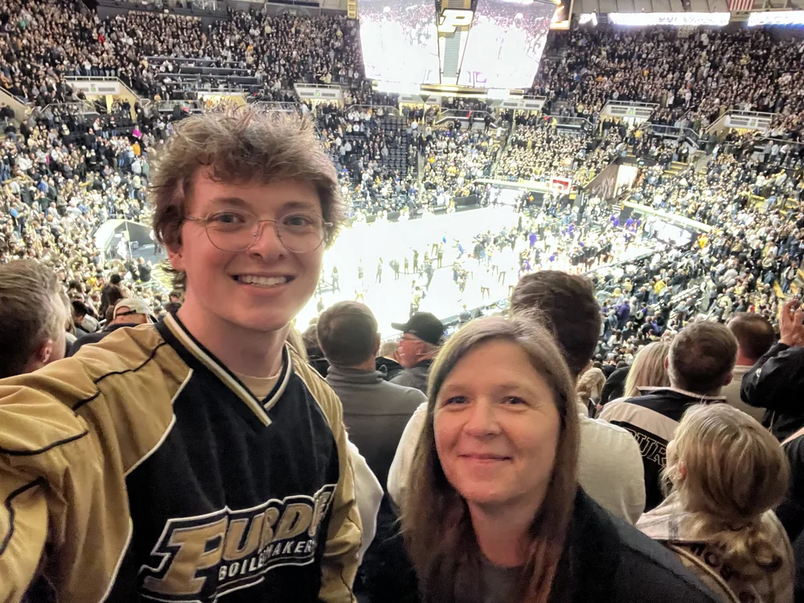
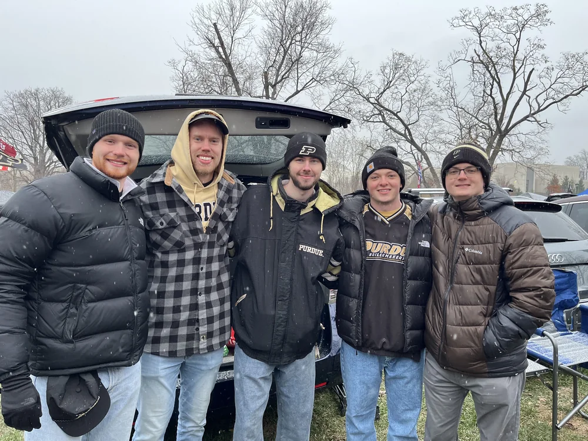
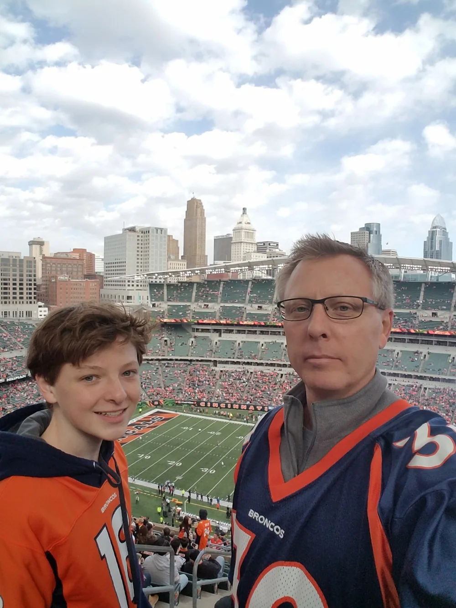
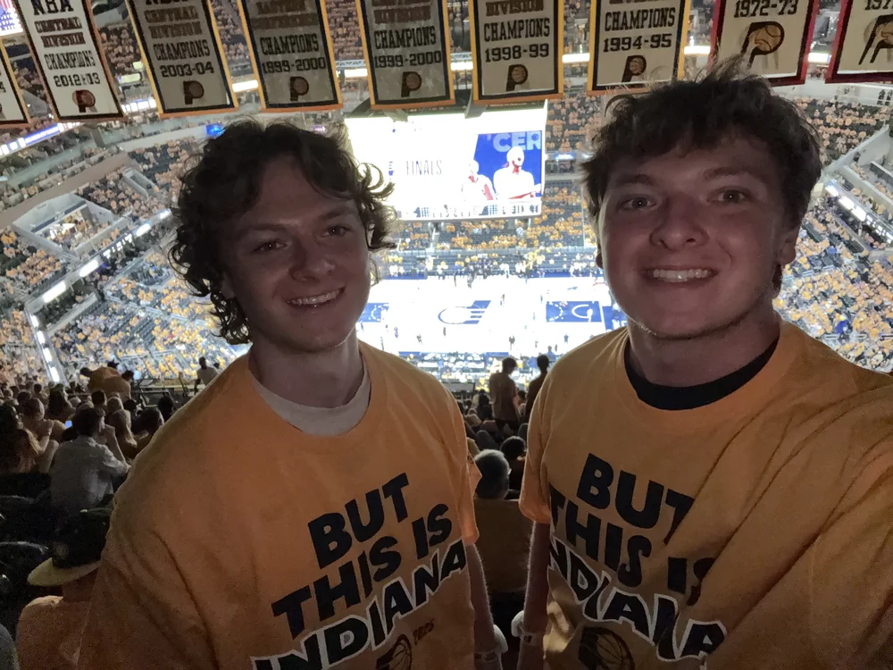

Sports
-

Purdue basketball
College basketball
Ready for the season to start! I’m curious to see what players step up with a majority of the production from last year gone. I’m hoping to make it to a game this season too.
-

Purdue football
College football
Well we’re better than we were the last couple years, I guess. I’m cautiously optimistic, but I really think we need a DC change to make real progress. Ryan Browne has exceeded my expectations this season too.
-

Denver Broncos
NFL
Every week is such a hard watch. The defense is really solid, but the offense has been so hit or miss. They’ll have one or two drives each game that gets me excited; then proceed to gain 15 yards of offense through 6 total drives or something. I’m hopeful that Bo just needs more time to adjust coming back from injury.
-

Indiana Pacers
NBA
I’m so excited Haliburton is back. I’m hoping to see a really fun two-man game with him and Zubac, but they both need to be healthy for that to happen. Health has already become a major issue, and we’re only a couple of weeks into the season. As long as the team is healthy by playoff time, I’ll be happy.